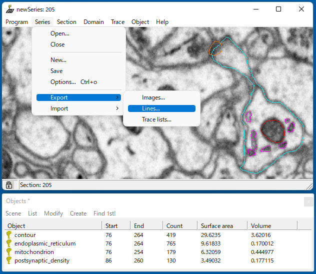
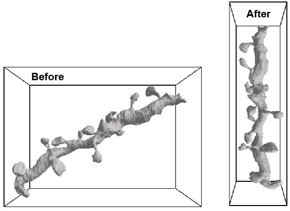

4.1. Import a shape from Reconstruct
This section begins with a result of manual labeling in the software ‘Reconstruct’ 1. The EM data comes from a previous research (FIB-SEM) 2 3, and we have already labeled a segment of dendrite (cyan), endoplasmic reticula (ER; magenta), mitochondrion (red), and postsynaptic densities (PSDs; orange) (below). Those labels were exported by the command in the pull-down menu ‘Series → Export → Lines’. A series of the ‘dxf’ files were saved to a specified directory. The exported files are stored in the directory $LD_DIRECTORY/tutorial/2/dxf_files (newSeries.0.dxf, newSeries.1.dxf, …) for this tutorial.
{kind=link}
The ‘dxf’ files can be read by the CreateVolumeFromReconstruct class (Lines 20-21 in 11_import_dend.py). This class obtains an ordered list of dxf files in the specified directory (dir_dxfs, Lines 10, 20), and the class method ‘create’ generates a volume that contains the specified named object (Lines 11-14, 21). In this case, the volumes of the dendrite, ER, mitochondrion, and PSDs are generated as numpy 3D arrays of dend, er, mito, and psd, respectively.
1import sys, os, errno
2import numpy as np
3import h5py
4from pyLD import *
5
6
7zpitch = 0.04 # XX um per EM slice
8xyzpitch = 0.02 # xyz-pitch (XX um) in the decoded volume
9
10dir_dxfs = 'dxf_files'
11dend = 'contour'
12er = 'endoplasmic_reticulum'
13mito = 'mitochondrion'
14psd = 'postsynaptic_density'
15save_filename = 'models/realistic_dendrite.h5'
16os.makedirs('models', exist_ok=True)
17
18
19print('\nCreate volumes.')
20c = CreateVolumeFromReconstruct(dir_dxfs, xyzpitch, zpitch, dend)
21volumes = [c.create(d) for d in [dend, er, mito, psd]]
22
23
24print('\nRotate volumes on the xz plane, to obtain a minimal bounding box.')
25vol_dend = volumes[0]
26r = RotateVolume(vol_dend, 1)
27volumes = [r.rotate(v) for v in volumes]
28
29#print('\nSwap axes to obtain the longest z direction.)
30#volumes = [v.swapaxes(1, 2) for v in volumes]
31
32
33print('\nSet space as a multiple of 32 x 32 x 32 voxels.')
34volumes = [lmpad(v) for v in volumes]
35
36
37print('\nObtain domain volumes from the list of volumes.')
38vol_dend, vol_er, vol_mito, vol_psd = volumes
39
40
41print('\nSmooth edges.')
42vol_dend = smooth_volume_erosion_then_dilation(vol_dend)
43vol_er = smooth_volume_dilation_then_erosion(vol_er)
44vol_psd = smooth_volume_dilation_then_erosion(vol_psd)
45
46
47print('\nLogical operation of volumes.')
48vol_not_mito = np.logical_not( vol_mito )
49vol_not_er = np.logical_not( vol_er )
50vol_dend_not_mito_not_er = vol_dend ^ (vol_mito | vol_er)
51
52
53print('\nCreate surface.')
54dend = CreateSurface(vol_dend, xyzpitch, num_smoothing = 5, method_smoothing = 'laplacian')
55
56m = {}
57m['bound vertices'] = dend.vertices
58m['bound faces'] = dend.faces
59m['bound faces in volume'] = dend.get_surface_to_volume()
60m['bound faces in volume'] *= vol_dend_not_mito_not_er
61face_id_psd = dend.get_face_ids_inside(vol_psd)
62m['psd faces in volume'] = dend.get_surface_to_volume(face_id_psd)
63m['psd faces in volume'] *= vol_dend_not_mito_not_er
64m['face id psd'] = face_id_psd
65
66mito = CreateSurface(vol_not_mito, xyzpitch)
67m['mito vertices'] = mito.vertices
68m['mito faces'] = mito.faces
69
70er = CreateSurface(vol_not_er, xyzpitch)
71m['er vertices'] = er.vertices
72m['er faces'] = er.faces
73
74m['unit length (um)'] = xyzpitch
75m['dendrite not mitochondrion not ER'] = vol_dend_not_mito_not_er
76
77tot_volume = np.zeros_like(vol_dend, dtype='uint8')
78tot_volume[vol_dend > 0] = 1
79tot_volume[vol_mito>0] = 2
80tot_volume[vol_er>0] = 3
81m['volume'] = tot_volume
82
83
84with h5py.File(save_filename,'w') as w:
85 for k, v in m.items():
86 w.create_dataset(k, data=v)
Then, the generated volumes are rotated to obtain a minimum bounding box of the objects (Figure below). This is because LM computes the reaction-diffusion of molecules in the cuboid space, the minimization of a dead space decreases the total amount of computation. We have already known that the dendritic object spans the largest volume; therefore, the RotateVolume class first obtains the rotation of the dendrite as a reference (vol_dend, Line 26), and the other objects (er, mito, psd) are rotated in a same manner (Lines 27). This process is executed only in the X-Z plane, because the same process has already been done in the generation of the target volumes, regarding the X-Y plane (Lines 20-21). The RotateVolume class is based on cv2.minAreaRect that computes the convex hull.
{kind=link}
The rotated volumes are then padded with a space to have the size of a multiple of 32 × 32 × 32 (Lines 33-34 in 11_import_dend.py). In addition, their boundaries are smoothed using one-step pairs of erosion and dilution (Lines 47-50). Finally, as in the case of schematic dendrite, their surface meshes are generated, and all of them are saved in the HDF file ‘models/realistic_dendrite.h5’ (Lines 53-86).
The generated dendrite can be visualized by the script ‘12_show_dend.py’ as follows:
1import os
2from tut2_functions import show_dendrite
3
4input_morpho_file = "models/realistic_dendrite.h5"
5output_image_file = "imgs/realistic_dendrite.png"
6os.makedirs("imgs", exist_ok=True)
7
8mlab = show_dendrite(input_morpho_file)
9mlab.savefig(output_image_file)
10mlab.show()

References
- 1
Fiala JC (2005) Reconstruct: A free editor for serial section microscopy, J. Microscopy 218: 52-61, https://synapseweb.clm.utexas.edu/software-0
- 2
Parajuli LK, Urakubo H, Takahashi-Nakazato A, Ogelman R, Iwasaki H, Koike M, Kwon HB, Ishii S, Oh WC, Fukazawa Y, and Okabe S (2020) Geometry and the organizational principle of spine synapses along a dendrite, eNeuro 27, ENEURO.0248-20.2020
- 3
Parajuli LK and Koike M (2021) Three-Dimensional Structure of Dendritic Spines Revealed by Volume Electron Microscopy Techniques, Front. Neuroanat. 15:627368.